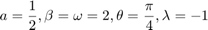
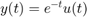

Gráficas de las funciones e
Con los valores de las constantes propuestos: 
Establecidos los valores de las constantes, las señales e son:
e 
A continuación se muestra el código requerido para mostrar las graficas de e respectivamente
t=[0:0.001:6]; x= @(t) exp(-0.5.*t).*cos(2.*t+pi/4).*heaviside(t); y= @(t) exp(-t).*heaviside(t); subplot(2,1,1) plot(t,x(t),'b','linewidth',1.5) plano = gca; plano.XAxisLocation = "origin"; plano.YAxisLocation = "origin"; axis([0 6 -0.8 0.8]) grid on xlabel('${t}$','interpreter','latex') ylabel('$x(t)$','interpreter','latex') title('$x(t)=e^{-0.5t}\cos{(2t+\frac{\pi}{4})}u(t)$','interpreter','latex') subplot(2,1,2) plot(t,y(t),'r','linewidth',1.5) plano = gca; plano.XAxisLocation = "origin"; plano.YAxisLocation = "origin"; axis([0 6 0 1]) grid on xlabel('${t}$','interpreter','latex') ylabel('$y(t)$','interpreter','latex') title('$y(t)=e^{-t}u(t)$','interpreter','latex')
Apoyandonos de la deducción anteriormente mostrada de la formula para la convolución de dos señales causales:
La convolución de las señales e usando es:
t=[0:0.01:6]; phi= atan(-2/(-0.5)); g= @(t) (-cos(pi/4-phi).*exp(-t)+exp(-0.5.*t).*cos(2.*t+pi/4-phi))/(sqrt((-0.5)^2+2^2)).*heaviside(t); figure plot(t,g(t),'m','linewidth',1.5) plano = gca; plano.XAxisLocation = "origin"; plano.YAxisLocation = "origin"; axis([0 6 -0.3 0.2]) grid on xlabel('${t}$','interpreter','latex') ylabel('$g(t)$','interpreter','latex') title('$g(t)=\int_{0}^{t}\!x(\tau)y(t- \tau)\,d\tau$','interpreter','latex')
A continuación se realizará la misma metodología para graficar y calcular la convolución de las señales e usando
Establecidos los valores de las constantes, las señales e son:
e
Las graficas de ambas señales respectivamente son
t=[0:0.01:6]; x1= @(t) exp(-0.5.*t).*cos(2.*t).*heaviside(t); y1= @(t) exp(-0.5.*t).*sin(2.*t).*heaviside(t); subplot(2,1,1) plot(t,x1(t),'b','linewidth',1.5) plano = gca; plano.XAxisLocation = "origin"; plano.YAxisLocation = "origin"; grid on xlabel('${t}$','interpreter','latex') ylabel('$x(t)$','interpreter','latex') title('$x(t)=e^{-0.5t}cos{(2t)}u(t)$','interpreter','latex') subplot(2,1,2) plot(t,y1(t),'r','linewidth',1.5) plano = gca; plano.XAxisLocation = "origin"; plano.YAxisLocation = "origin"; grid on xlabel('${t}$','interpreter','latex') ylabel('$y(t)$','interpreter','latex') title('$y(t)=e^{-0.5t}sen{(2t)}(t)$','interpreter','latex')
Apoyandonos de la deducción anteriormente mostrada de la formula para la convolución de dos señales causales:
La convolución de las señales e usando es:
t=[0:0.01:6]; g1= @(t) (0.5).*t.*exp(-0.5.*t).*sin(2.*t).*heaviside(t); figure plot(t,g1(t),'m','linewidth',1.5) plano = gca; plano.XAxisLocation = "origin"; plano.YAxisLocation = "origin"; grid on xlabel('${t}$','interpreter','latex') ylabel('$g(t)$','interpreter','latex') title('$g(t)=\frac{1}{2}te^{-0.5t}sen{(2t)}u(t)$','interpreter','latex')
En los siguientes enlaces se pueden consultar las simulaciones en Desmos de la convolución de las señales para las formulas y son:
Convolución utilizando la formula https://www.desmos.com/calculator/tiu49nanuo?lang=es
Convolución utilizando la formula https://www.desmos.com/calculator/afopi7necl?lang=es